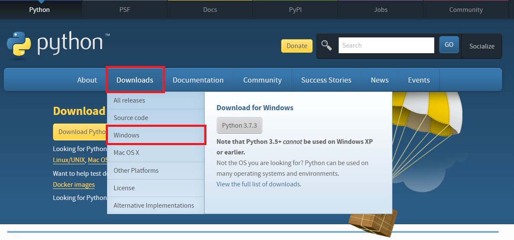
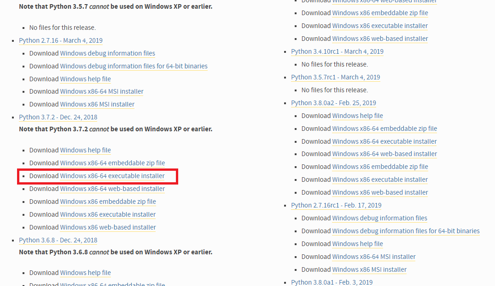
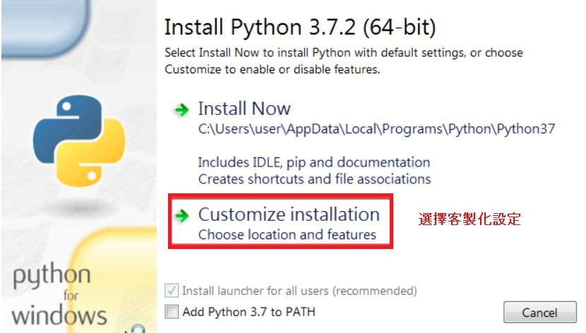
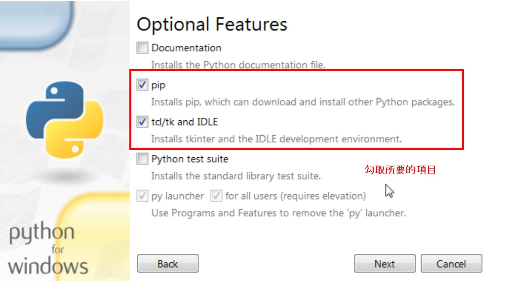
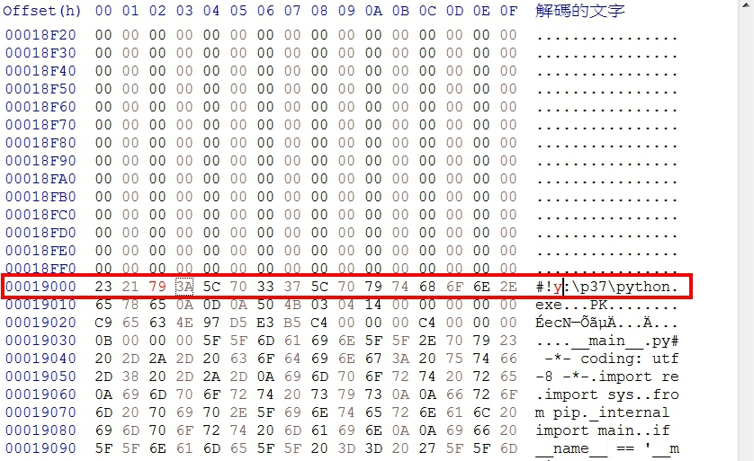
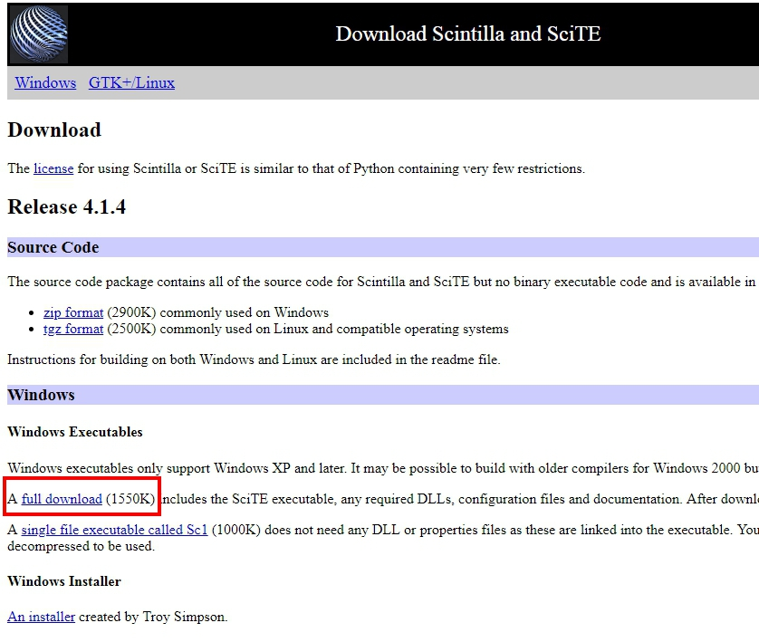
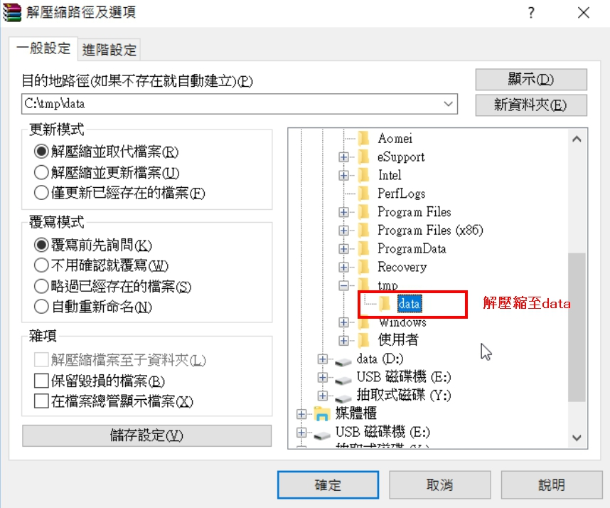
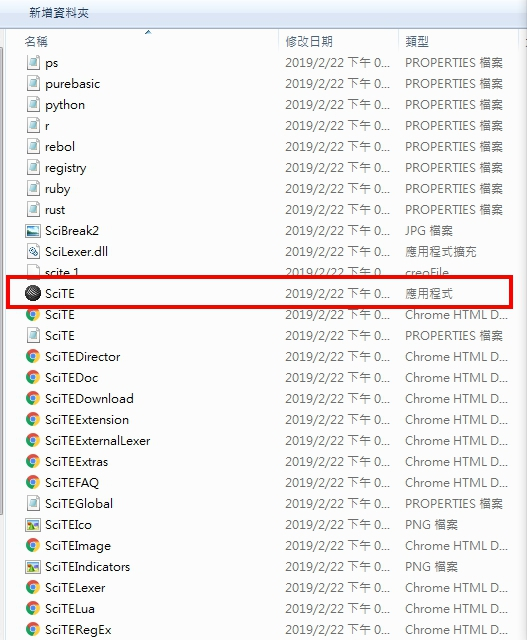
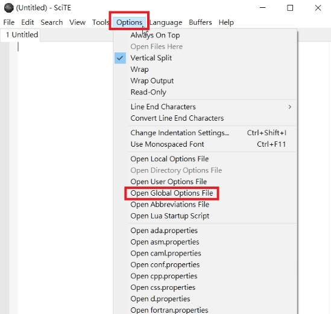
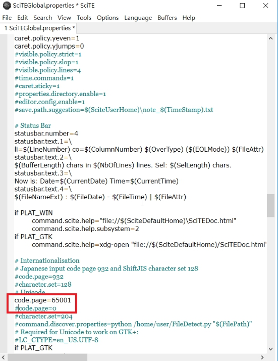

Operation Demo << Previous Next >> Start.bat製作
Operation Demo << Previous Next >> Start.bat製作
如何建立可攜程式系統
1.在C:/中創建名稱為data的新資料夾 ，等等方便連接Y:/
2.進入 python3.7.2 點選Downloads底下的Windows
3.進入後下載紅框處的檔案

4.載完後開啟python選擇客製化設定
5.勾選需要的項目後進入下一步

6.輸入要存放的路徑後就可以安裝了

7.安裝完後進入C:\tmp\p37\Scripts 開啟pip.exe
註:利用Ctrl+F尋找c:\p37並改為y:\p37

8.下載 SciTE
9.下載完後解壓縮至data

10.解壓縮完後在資料夾中開啟SciTE

11.開啟SciTE後點選Option中的Open Global Options File

12.利用Ctrl+F尋找code.page 並修改成65001

13.更改完save起來，把整個p37資料夾移至data資料夾就完成了
Operation Demo << Previous Next >> Start.bat製作